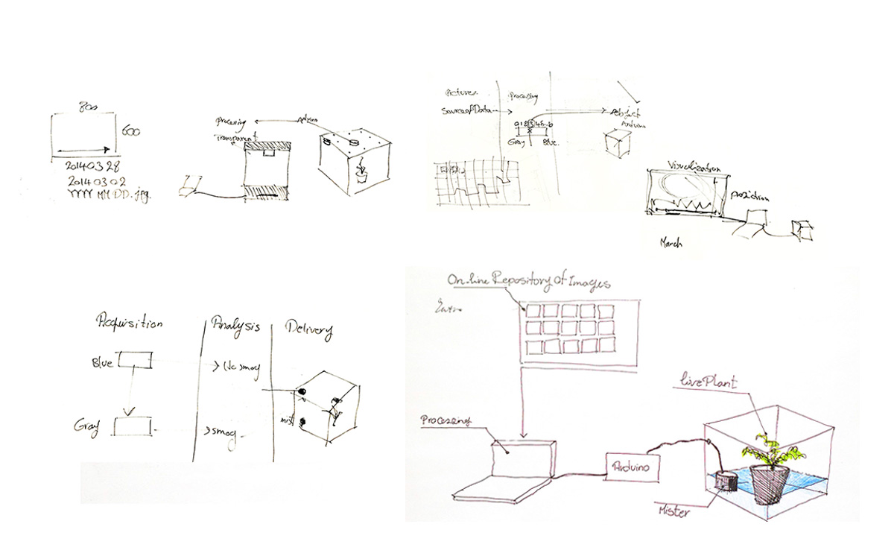
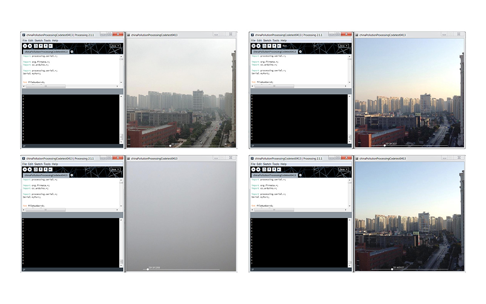
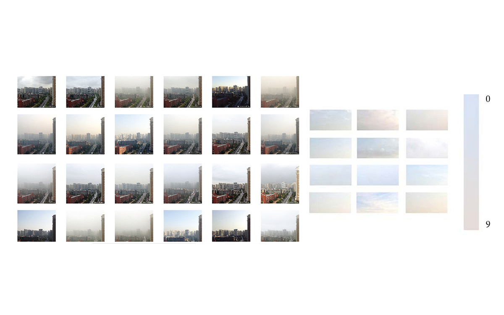
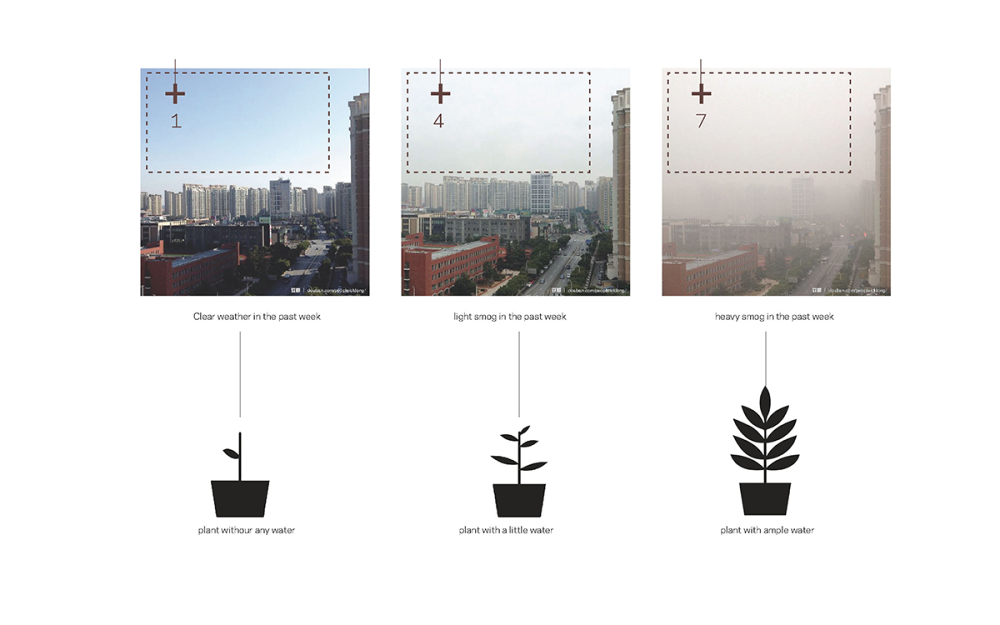
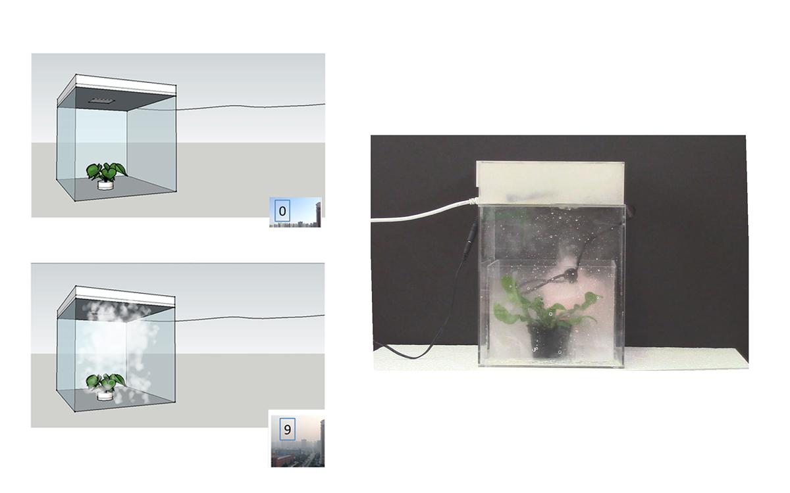
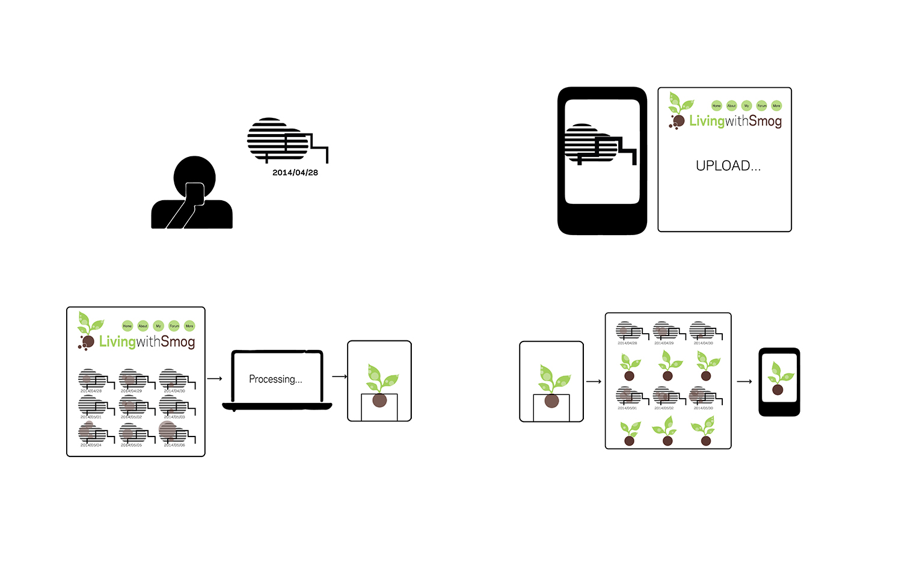

In response to China’s severe smog situation, this project intends to generate real-time data from people's everyday experience, develop an open platform for the collection, elaboration and distribution of real-time data.
2014
Data Processing
Prototyping
living with smog: working prototype
In December 2013, China suffered severe smog. Up till now, the severity has not been mitigated. In response to this situation, different administrative departments have issued their real-time data, tracking the pollution situation. However there are discrepancies among these seemingly accurate data. At the same time, the public responses to this situation in a more intuitive ways: they talk about it in everyday conversations; they share their comments and concerns through social websites; they snap and post the foggy scenes in their eyes.
Therefore, this project intends to generate real-time data from people's everyday experience, develop a platform for people to share their real-time data of smog worldwide. While the project started with the issue of data discrepancies from different official agencies, the intention of this project is more to involve public to create real-time personal data rather than creating official accurate data. At its best, this platform could serve as a mediation between discrepancies of those official data in a playful way.
We use Processing to analyze the color of the sky and the transparency of air on the photos taken by people, and give it a value. This value would be input into Arduino to control a mist maker in a planting box. The mist maker would synchronize the transparency of the planting box with the transparency of urban air. The plant lives with the mist, just like an analog of people living with the smog.
I was following a person on the social media website Douban who posts a photo of the sky in his place almost on a daily basis. These photos are taken with same frame and under same angle of view, thus it tells a clear story how the weather condition changed day by day. His sky photo album serves as a perfect set of real-time data input for our project. And we got the permit to use his photos and in Processing, we analyze the color of the sky of the photos and the transparency of air, and give it a value from 0-9.
 A glass container with a small plant inside is designed and built as the working prototype of this project. The value extracted from photos is input into Arduino to control a mist maker in the water tank. When the value is larger than 6, the mist maker starts to function and generate fog, making the glass box opaque thus the green plant can’t be seen clearly. The plant lives with the fog, just as people live with the smog.
 Imaging each city would have several spots of observation and snapping shots, we could build a data platform online to share these data. As a result, the planting box on your desk could be connected to data from your city or a city you care about.
The project encourages people to take photos to track their living environment. The photo data are processed to generate humidity to water the plants and the growth of plant is observed and photos are taken and uploaded to the same platform. The air pollution situation is represented through the growth of the plants (in fact, if the air is more polluted, the mist maker would function more, therefor the plants would receive more water and grow better). People from different cities are able to communicate through the open platform and share the air pollution information in a more intuitive, poetic and playful way.